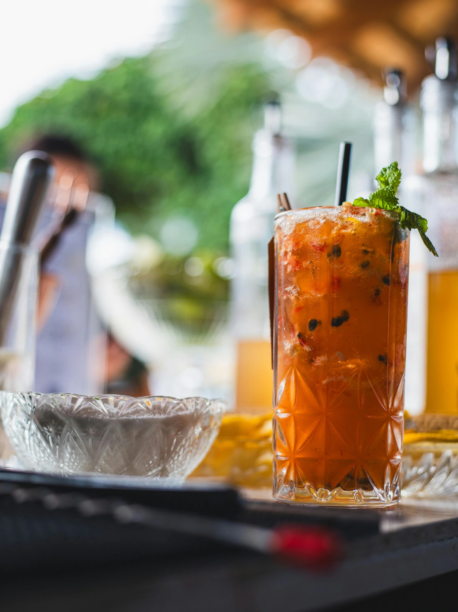

Cachaça envelhecida, limão cravo, xarope de cumaru e fumaça de alecrim.
Gin premium, tônica, zimbro, anis estrelado e espuma de cupuaçu.
O clássico revisitado: cachaça em amburana, cynar e vermute tinto.
* Dados de contato e links fictícios exclusivos para demonstração de portfólio.